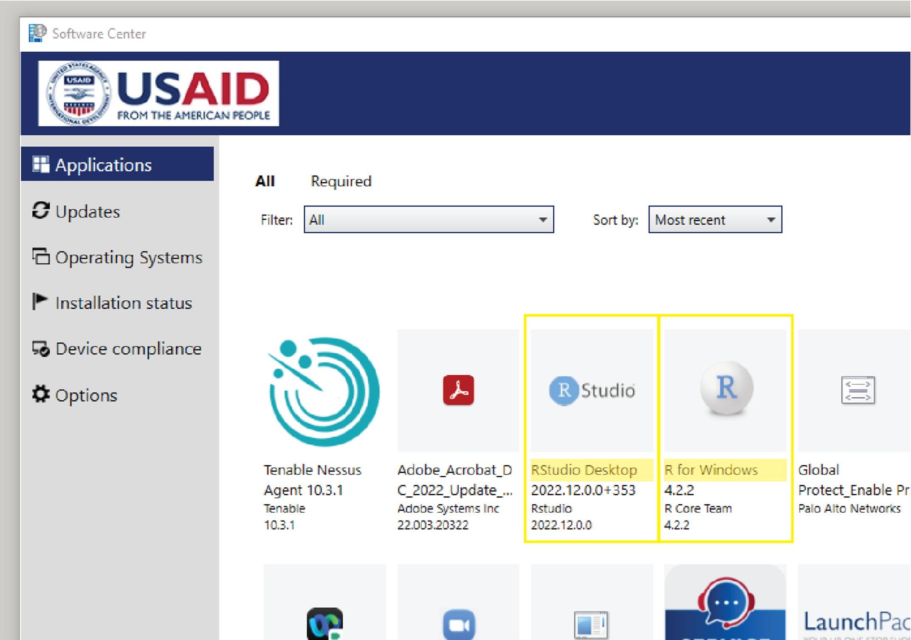
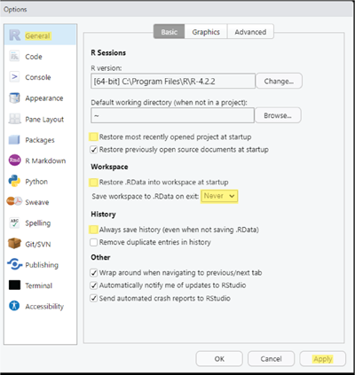
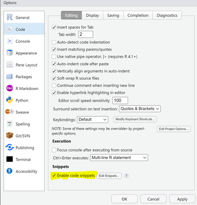
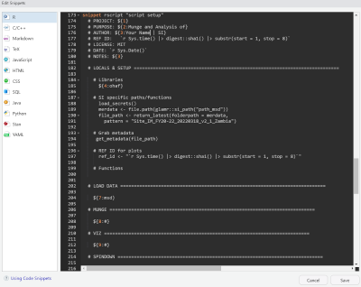
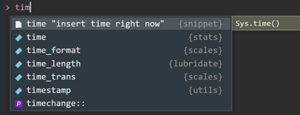

4 Installing R, RStudio, RTools
4.1 Installing R and RStudio
Working from your USAID laptop, Government Furnished Equipment (GFE), you can install R and RStudio without having to submit a ticket to the M/CIO Help Desk. R is the open-source statistics package that we use for our work and is the engine that powers RStudio Desktop, the user interface or integrated development environment (IDE). RStudio Desktop or another IDE such as Visual Studio Code is not required to use R, but will vastly improve your experience.
To install both R and RStudio Desktop on your GFE, go to Software Center on your computer (Start > Microsoft Endpoint manager > Software Center) Once there, you can select the Application called “R for Windows” and click “Install”. After that completes, you can then select “RStudio Desktop” and then “Install”. If you run into any issues, first try restarting your machine and if that fails, you can contact M/CIO Help Desk.

If working on a personal machine, you can install R from CRAN. Select “Download R for Windows” and then “base” and follow the instructions for installing that pop up when you launch the .exe file from your downloads. RStudio Desktop can be installed Posit’s website by selecting “Download RStudio Desktop for Windows” and then following the setup instructions.
4.2 Installing Rtools
If you are working on a GFE, you will need to submit a ticket to M/CIO Help Desk to install Rtools on your machine. If you are installing from your personal machine, you will need to download and install the version of Rtools based on the R version you are using. You can determine what version of R you are using by opening up a new instance of R or RStudio and the version will be the very first thing that appears in your console.
4.3 RStudio Global Options
It’s best practice to start with a clean session each time you load up RStudio, so you will want to adjust some default options in your IDE. To access these, in the menu bar at the top, navigate to Tools > Global Options. Here are the places you will want to make changes to the default options before you hit “Apply”:
- Uncheck “Result most recent opened project at startup”
- Uncheck “Restore .RData into Workspace at startup”
- Change dropdown to “Never” for “Save workspace to .RData on exit”
- Uncheck “Always save history (even when not saving .RData)

4.4 Storing Snippets
Rstudio code snippets are predefined code shortcuts that can be used to quickly insert commonly used code blocks. The use of snippets can improve coding efficiency, reduce the time spent copying and pasting code from other scripts, and improve the readability of your code by providing a standardized format for your analytical scripts.
To create your own snippets in Rstudio, go to “Tools > Global Options > Code > Edit Snippets. This will open a file where you can define your custom snippets using a simple syntax.

Rstudio comes bundled with a set of built-in snippets that you may have already used without even realizing it. The snippets are not limited to just R, but to all of the different languages you can code in within the Rstudio IDE. In the example below, this snippet sets up the formatting of a script for you. To create a new snippet, follow the syntax in the window and click save. Your snippet is now available for use.

For example, if we wanted to create snippet to insert a new object that represents the time right now, we could use the following snippet:
snippet time “insert time right now”
Sys.time()Close your snippet window by hitting save, and return to the console.
When we start typing we will then see the following appear.

If we hit Tab, the Sys.time() function will be inserted in the console window. When we hit enter, Rstudio will report the current time. While this may not be that useful, you can imagine how useful this may be if you need to insert the date or a repeated chunk of code.
4.5 Types of snippets
There are broadly four different types of snippets available for use or creation.
- Predefined snippets: RStudio comes with several built-in snippets for common programming tasks. These snippets cover a wide range of R code structures and functions, such as for loops, if statements, function definitions, and more.
- Triggering snippets: Snippets are triggered by typing a specific keyword followed by pressing the “Tab” key. For example, if you type “for” and then press “Tab,” RStudio will automatically expand the snippet into a basic for loop structure.
- Tab stops: Snippets may contain tab stops (usually denoted by the ${1}), indicated by numbers or placeholders. These allow you to quickly navigate through the different sections of the snippet by pressing the “Tab” key. For example, if you have a placeholder for a variable name, pressing “Tab” will move the cursor to that position, allowing you to enter the desired variable name.
- Dynamic snippets: Snippets can be dynamic and include placeholders that are automatically filled with values based on the context.For example, the “# DATE: r Sys.Date()” code chunk will insert today’s date into your script.
By using RStudio snippets, you can streamline your coding workflow, reduce repetitive typing, and improve overall productivity when working with R code. We highly encourage you to take advantage of snippets and share your discoveries with the team.